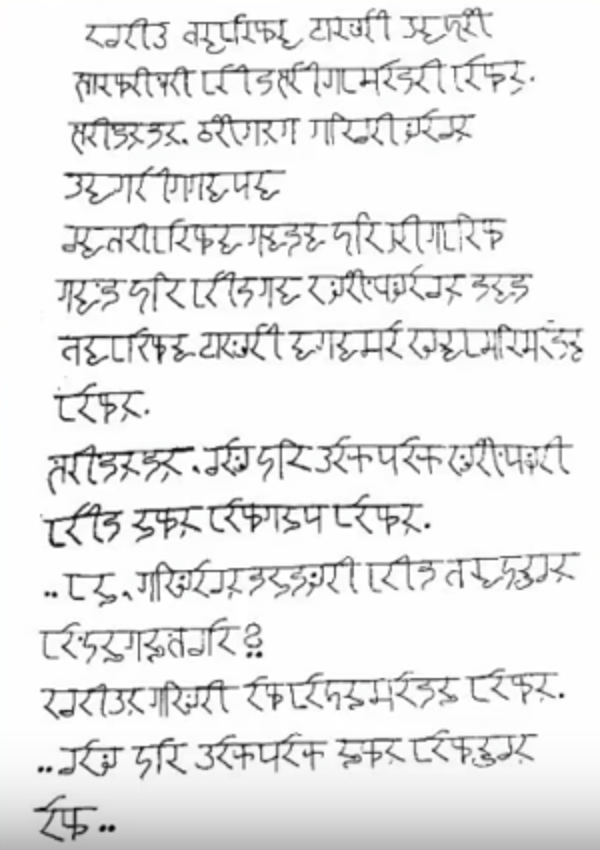
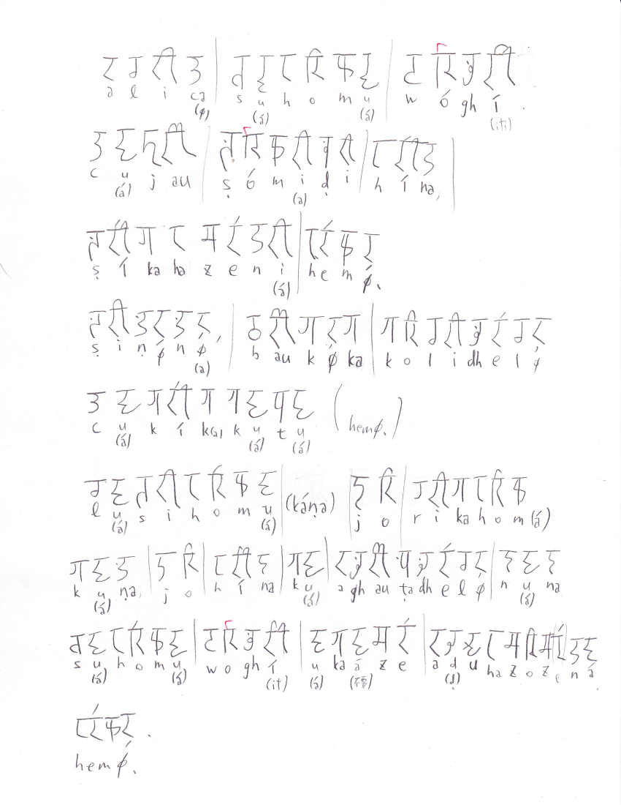
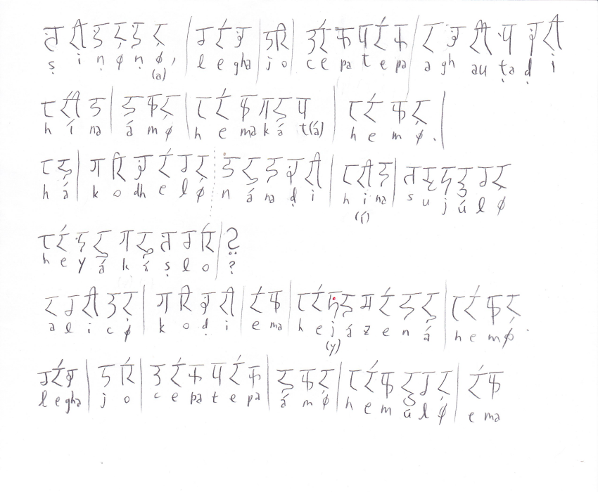
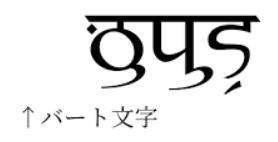

以下は考察ログであり、設定集はこれから作る予定である。
語尾の情報とかを元に頑張ってみた。
語 義 品詞 同根語 Bhát バート 子音幹名詞 牌huet,藍phedu zepha 言語 母音幹名詞 牌zep1,藍chepo bháma 私たち(包括) 母音幹名詞 aṭam 神、皇帝 子音幹名詞 牌tam2,藍atam hemúl ある 動詞 牌aim2,藍aima lási 一 母音幹名詞 牌et2,藍asi ríka 二 母音幹名詞 牌ik2,藍iku dhoḷop 島 子音幹名詞 牌dop1,藍dopiai ṣibhai 国 母音幹名詞 牌sip1 ákíjam 東 子音幹名詞 牌kiak1 hem 完了の無変化動詞 無変化動詞 nána 関係代名詞 母音幹名詞 cepatepa 会話 母音幹名詞 legha 絵 母音幹名詞 牌lek1 ám 否定副詞 副詞 ká 三人称女性単数 母音幹名詞 bhoma 手 母音幹名詞 牌hop1,藍phobo bhomúl 取る、持つ 動詞 牌hop1,藍phobo káṇa 時間,時刻? 母音幹名詞 cákíkúḷ 集まる? 動詞 dhárad 連合? 子音幹名詞 hórabát 文化? 子音幹名詞 dhárad 共同体? 子音幹名詞 jó または? 助辞? sá ? 母音幹名詞 vóghit ? 子音幹名詞 cájau ? ṣóma ? 母音幹名詞 hína ? ṣíkahúḷ ? 動詞 ṣiṇṇa ? baukká ? kóli ? 母音幹名詞 aghauṭa ? 母音幹名詞 ákúḷ ? 動詞 aḍuhazóúḷ ? 動詞 há ? ko ? sujúl ? 動詞 heyáúḷ ? 動詞 ema ?プレーンテキスト Googleスプレッドシート
まず、文字について。リパライン倉庫の表記にそぐわないやつがあるかどうか確かめる。
リパライン倉庫のに準拠するなら、ptcxkhrzmnljwbdsgyṭḍṇḷṣaiuáíúeoで書けるはずである。
-e-と-é-、-o-と-ó-は確か同一音素の表記揺れに過ぎなかったはずだから、óの登場については気にしない。
vóghitに謎のvが出てくるが、まあこれはwのことだろう。
はいOK。
不定詞語尾は-úḷのはずなのだが、PMCFショーケースの転写を見ても燐字海を見ても-úlになっている。
「実は二種類の活用がある説」とかも面白そうだが、面倒だし、単純に「面倒なので-úḷの点を打たないことがある」でよかろう。バート文字においても区別は点でなされるし。
PMCFショーケースに貼られている画像
を解読した。
 これを見ると、デーヴァナーガリーのような「ダイアクリティカルマークで母音を表す」ではなく、母音がそれ自体で独立した字として使われていることが分かる。
これについて確認したところ、
2. ショーケースに貼ってあった画像だと、a以外の母音は（デーヴァナーガリーのようなダイアクリティカルマークでなく）独立した文字として書かれているが、それで正しい？
— .sozysozbot.@hsjoihs@jekto.vatimeliju (@sosoBOTpi) 2017年11月24日
そうなっているならそうかもしれない。
— Fafs/தமிழ் மாணவன் (@sashimiwiki) 2017年11月24日
了解。なら、↓の案件が消滅して楽になるなぁhttps://t.co/zly3mh20za
— .sozysozbot.@hsjoihs@jekto.vatimeliju (@sosoBOTpi) 2017年11月24日
アルファベットだったのか。
— Fafs/தமிழ் மாணவன் (@sashimiwiki) 2017年11月24日
aは書かないので一応アブギダさはあるが、確かにアルファベットに近い体系になりそう
— .sozysozbot.@hsjoihs@jekto.vatimeliju (@sosoBOTpi) 2017年11月24日
ということになった。
一方、S.Yの機関誌では
という風に、ダイアクリティカルマークで書いている。
ということで、ダイアクリティカルマークで書くのを「伝統表記」、独立して表記するのを「現代表記」とすることにしてみよう。そうすればOSで実装するのも楽だし。
なるほど。
— .sozysozbot.@hsjoihs@jekto.vatimeliju (@sosoBOTpi) 2017年11月24日
1. 頑張ったけど完全には文が解読ができなかったので、単語集とかがあったら下さい
2. 文字を書いたのは誰なんだろう
1. ラネーメ祖語辞書を参照すると好い。
— Fafs/தமிழ் மாணவன் (@sashimiwiki) 2017年11月24日
2. 文字を書いたのは私ですが
ということで、ラネーメ祖語辞書を手に入れたので、解読＆転記していく。
なるほど、ákúḷは「読む」か。
cájau[後置詞]「～と共に」だそうだ。
などなどやって、暫定辞書進化版ができた。スプレッドシートはこちら。
流石に辞書があればそれなりに読める。一部引っかかったものとか有用な情報とかを抜粋する。
ṣiṇṇa(しかし) baukká(だんだん、ゆくゆく) kóli(疲れ) -dhel(母音幹単数対格) cákík(来る 訪れる 来訪する) -akátá(指示・固有過去分詞) hem(完了の無変化動詞)
直訳するなら、「しかし、だんだん疲れを(非生物が)訪れた。」だが、これでは妙である。
DMでfafs氏と話したところ、cákík(来る 訪れる 来訪する) -akátá(指示・固有過去分詞)ではなくcákíka(訪れさせる) -kátá(指示・固有過去分詞)なのではないか、という結論になった。ということは、他動詞化語尾-aの存在が考えられる。
バート語の人称変化は主語との一致である。（fafs氏曰く、「人称変化が対格一致の言語は確か悠里に無い」とのこと。）
ということで、「〜するだろうか」が固定でzúḷ heyákáṣloであるのは、不定詞zúḷが主語となるからということのようだ。
そもそも論として、語順はSOVだったりする。パイグとかリパラインとかと違うので意識する必要あり。ただし、関係節は後置修飾である。
「Legha jó cepatepa ám hemúl ema.ってhemúḷが後置格にならなくてええんかね」と聞いたところ、「動詞不定形は名詞の曲用には従わないけど名詞節になるらしい。」となった。「emaが名詞を取る時は原則どおり後置格、不定詞を取る時は無変化、という感じかな」となった。
@sashimiwiki 「国」、ṣibhaiにします？síbhaにします？
— .sozysozbot.@hsjoihs@jekto.vatimeliju (@sosoBOTpi) 2017年11月24日
ṣibhai: Ákíjamán dhoḷopáná ṣibhaiomá dhárad
— .sozysozbot.@hsjoihs@jekto.vatimeliju (@sosoBOTpi) 2017年11月24日
síbha: Ámaom cákíkamúná síbha? ká ṣomazená káom síbhaḍi hína.
消すとめんどいので両方採用したいと思います（要するに二重語）
— .sozysozbot.@hsjoihs@jekto.vatimeliju (@sosoBOTpi) 2017年11月24日
（偶然にも）祖語辞書の例文ではṣibhaiは「国・国家」の意味でのみ、síbhaは「出身・故郷」の意味でのみ使われているので、そういう分割にします
— .sozysozbot.@hsjoihs@jekto.vatimeliju (@sosoBOTpi) 2017年11月24日
#メモ
— .sozysozbot.@hsjoihs@jekto.vatimeliju (@sosoBOTpi) 2017年11月24日
祖語辞書の「ek[助詞]らしい みたいだ」にbtと書く
#メモ
— .sozysozbot.@hsjoihs@jekto.vatimeliju (@sosoBOTpi) 2017年11月24日
nímaṣ[名詞]民族、部族 にbt
たまにバート語なのに祖語辞書でbtついてないやつがある。つらい。
@sashimiwiki Ámaom cákíkamúná síbha? 「あなたは何処の出身ですか？」における過去分詞のこの用法が謎（直接名詞を修飾できるんですかね）
— .sozysozbot.@hsjoihs@jekto.vatimeliju (@sosoBOTpi) 2017年11月24日
修飾できるのでは(分詞って言うし
— Fafs/தமிழ் மாணவன் (@sashimiwiki) 2017年11月24日
)
なるほどね（なるほどね）
— .sozysozbot.@hsjoihs@jekto.vatimeliju (@sosoBOTpi) 2017年11月24日
@sashimiwiki nímaṣáná taku 連邦 と+taku>ṣomatáku.bt[名詞]共産 集産 に出て来るtakuが分からん（そもそもバートで語頭にtが立つ例が他に無いが）
— .sozysozbot.@hsjoihs@jekto.vatimeliju (@sosoBOTpi) 2017年11月24日
takuってなんだろう
— Fafs/தமிழ் மாணவன் (@sashimiwiki) 2017年11月24日
なんだろう（理語・牌語共に発見できず）
— .sozysozbot.@hsjoihs@jekto.vatimeliju (@sosoBOTpi) 2017年11月24日
ホエール(@ransewhale)の担当言語から流れてきた何かってことにでもしようかなぁ（てきとう）
— .sozysozbot.@hsjoihs@jekto.vatimeliju (@sosoBOTpi) 2017年11月24日
ṣoma(堤 土手) +taku > ṣomatáku(共産 集産)
— .sozysozbot.@hsjoihs@jekto.vatimeliju (@sosoBOTpi) 2017年11月24日
nímaṣáná(民族たちの〜) + taku > nímaṣáná taku (連邦)
さて、なんだろう
takuってなんだろう https://t.co/lDdYw3Jjfe
— .sozysozbot.@hsjoihs@jekto.vatimeliju (@sosoBOTpi) 2017年11月24日